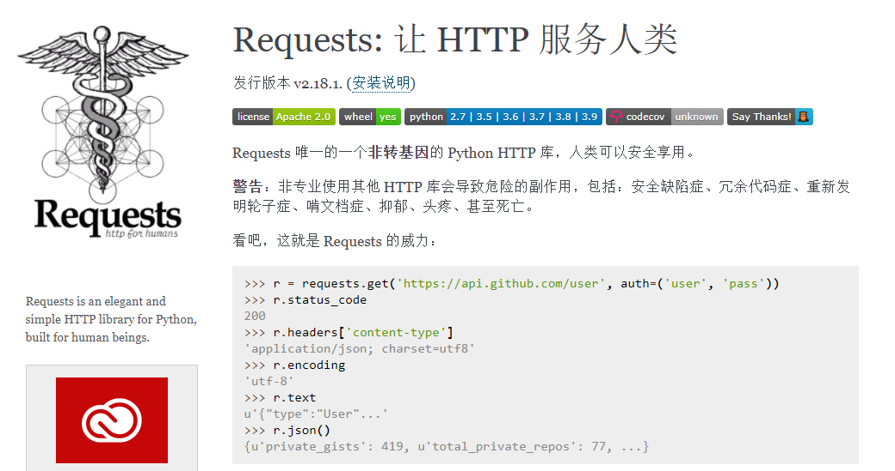

python内置了HTTP库 urllib，可以用于发送http请求。基于Python的第三方库Requests是对urllib的再次封装，相比urllib更加简洁易用。Requests库不仅用于接口测试，还用在Python爬虫、量化交易等。本文介绍Requests库的使用方法。
Requests
HTTP接口测试涉及到以下几个方面：
- 构造请求方法：get、post、put、 delete、head ……
- 构造请求体：form、json、xml、 binary
- 分析响应结果：status code、 response body、 json path、 xpath
下面介绍使用Requests怎么实现这些步骤。
Requests安装
Github地址：Python HTTP Requests for Humans
requests官方文档: https://requests.readthedocs.io/zh_CN/latest/index.html

安装：1
pip install requests
http请求响应测试接口：https://httpbin.testing-studio.com/
也可以自己本地搭建，GitHub地址：https://github.com/postmanlabs/httpbin
Requests常见接口请求方法构造
常见接口请求方法：1
2
3
4
5
6r = requests.get('https://api.github.com/events') #get请求
r = requests.post('http://httpbin.org/post', data = {'key':'value'}) #post请求
r = requests.put('http://httpbin.org/put', data = {'key':'value'})
r = requests.delete('http://httpbin.org/delete')
r = requests.head('http://httpbin.org/get')
r = requests.options('http://httpbin.org/get')
请求目标构造
请求URL1
2
3import requests
r = requests.get('https://api.github.com/events') #get请求
print(r.status_code)
输出：1
200
header构造
普通的 header1
2
3url = 'https://api.github.com/some/endpoint'
headers ={user-agent': 'my-app/0.0.1'}
r= requests.get(url, headers=headers)
cookie
1 | url = 'http://httpbin.org/cookies' |
构造请求体
请求体通过键值对的形式编码，有多种形式的请求体，比如query参数、form请求、binary请求（上传文件）以及结构化请求：json、xml、 json rpc等。
Get Query请求
1 | payload= {'key':'valuel','key2':'value2'} |
Form请求参数
1 | payload = {'key':'valuel','key2':'value2'} |
JSON请求体构造
1 | url = 'https://api.github.com/some/endpoint' |
xml请求
1 | import requests |
binary请求
上传文件1
2
3url = 'http://httpbin.org/post'
files = {'file': open('report.xls', 'rb')}
r = requests.post(url, files=files)
接口测试断言
接口测试中需要通过检查响应是否符合预期来测试接口有效性，也就是对接口响应进行断言。
响应
- r.url：
- r.status_code
- r.headers
- r.cookies
- r.encoding
- r.content
- r.text
- r.json()
1 | import requests |
结构化响应断言
下面是请求Github项目仓库API，GitHub API可参考：https://docs.github.com/cn/rest/overview。
1 | import requests |
响应的部分json数据如下：1
2
3
4
5
6
7
8
9
10
11
12
13
14{
"id": 272401302,
"node_id": "MDEwOlJlcG9zaXRvcnkyNzI0MDEzMDI=",
"name": "DjangoDemo",
"full_name": "hiyongz/DjangoDemo",
"private": false,
"owner": {
"login": "hiyongz",
"id": 20513021,
"node_id": "MDQ6VXNlcjIwNTEzMDIx",
"avatar_url": "https://avatars0.githubusercontent.com/u/20513021?v=4",
"gravatar_id": "",
...................
}
接下来介绍不同方法对这个json响应进行断言。
json断言
json断言1
2
3
4
5import requests
def test_json(self):
r = requests.get('https://api.github.com/repos/hiyongz/DjangoDemo')
assert r.json()['owner']['login'] == "hiyongz"
JSONPath断言
JSONPath文档：https://goessner.net/articles/JsonPath/
JSONPath表达式与XPath类似，是XPath在json中的应用，全称XPath for JSON，用于从JSON文档中提取数据。
JSONPath表达式和XPath语法对比如下：
| XPath | JSONPath | Description | |
|---|---|---|---|
| / | $ | 跟节点 | |
| . | @ | 当前节点 | |
| / | . or [] | 儿子节点 | |
| .. | N/A | 父节点 | |
| // | .. | 子孙节点 | |
| * | * | 匹配所有节点 | |
| @ | N/A | 属性 | |
| [] | [] | 下标操作符 | |
| \ | [,] | 多选 | |
| N/A | [start : end : step] | 切片 | |
| [] | ?() | 过滤表达式 | |
| N/A | () | script 表达式 | |
| () | N/A | 分组 |
Python中有个jsonpath库可用于处理json数据：https://pypi.org/project/jsonpath/
安装：pip install jsonpath
和前面一样，断言登录名：1
2
3
4
5
6import requests
from jsonpath import jsonpath
def test_json(self):
r = requests.get('https://api.github.com/repos/hiyongz/DjangoDemo')
assert jsonpath(r.json(), '$..login')[0] == "hiyongz"
schema断言
JSON Schema可以用来注释和验证 JSON 文档，官网：http://json-schema.org/。
JSON Schema可用来添加自定义规则，可以自定义数据类型：1
2
3
4
5
6
7schema = {
"type" : "object",
"properties" : {
"price" : {"type" : "number"},
"name" : {"type" : "string"},
},
}
可以看到，除了字段值断言外，可以使用JSON Schema来断言接口返回值的类型。
把json格式转成schema，在线生成schema网址：https://jsonschema.net/
jsonschema是使用JSON Schema的Python库，通过 pip install jsonschema 命令安装。1
2
3
4
5
6
7
8
9
10
11
12
13
14import requests
from jsonschema import validate
def test_get_login_jsonschema(self):
url = "https://api.github.com/repos/hiyongz/DjangoDemo"
r = requests.get(url)
data = r.json()
schema = {
"name" : "DjangoDemo",
"owner" : {
"login" : "hiyongz",
},
}
validate(data, schema=schema)
JSON Schema可以用来进行自动校验：在接口测试中，每次运行的时候自动保存当前的 schema，下次运行对比上次的 schema，如果发现变更就报错
xml解析断言
xml文件解析可以使用requests_xml，参考：https://github.com/erinxocon/requests-xml
也可以使用Python xml.etree.ElementTree模块解析xml数据，可以使用Xpath定位，使用方法参考：Web自动化测试：xpath & CSS Selector定位
xml.etree.ElementTree模块xml解析举例：1
2
3
4
5
6
7import xml.etree.ElementTree as ET
root = ET.fromstring(countrydata)
root.findall(".")
root.findall("./country/neighbor")
root.findall(".//year/..[@name='Singapore']")
root.findall(".//*[@name='Singapore']/year")
root.findall(".//neighbor[2]")
和JSON Schema一样，也有一个XML Schema，用于解析xml文档，文档参考：https://www.w3.org/2001/XMLSchema
Python库安装： pip install xmlschema
hamcrest断言
除了常用的Assert断言以外，有一个功能更加强大的断言方法叫Hamcrest 断言，具有丰富的断言匹配器，支持多种语言，官网地址：http://hamcrest.org/
下面简单介绍一下Python中的hamcrest断言使用方法
PyHamcrest GitHub仓库地址：https://github.com/hamcrest/PyHamcrest
文档：https://pyhamcrest.readthedocs.io/en/v2.0.2/tutorial/
安装PyHamcrest：1
pip install PyHamcrest
断言登录名：1
2
3
4
5
6
7import requests
from hamcrest import *
def test_hamcrest(self):
r = requests.get('https://api.github.com/repos/hiyongz/DjangoDemo')
data = r.json()
assert_that(data['owner']['login'], equal_to("hiyongz"))
本文标题:接口测试框架Requests
文章作者:hiyo
文章链接:https://hiyongz.github.io/posts/api-test-requests/
许可协议:本博客文章除特别声明外，均采用CC BY-NC-ND 4.0 许可协议。转载请保留原文链接及作者。